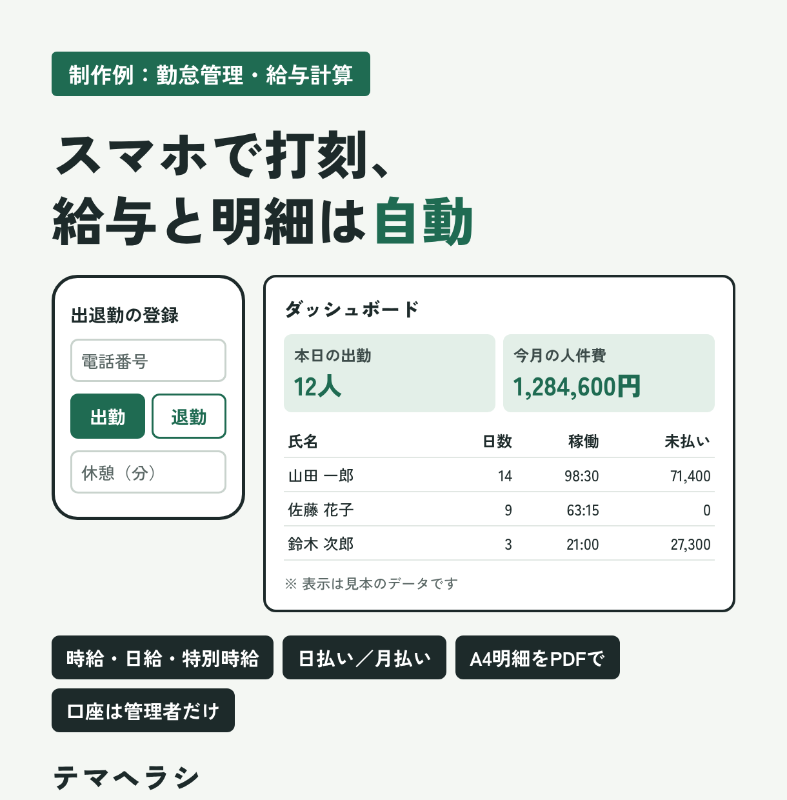
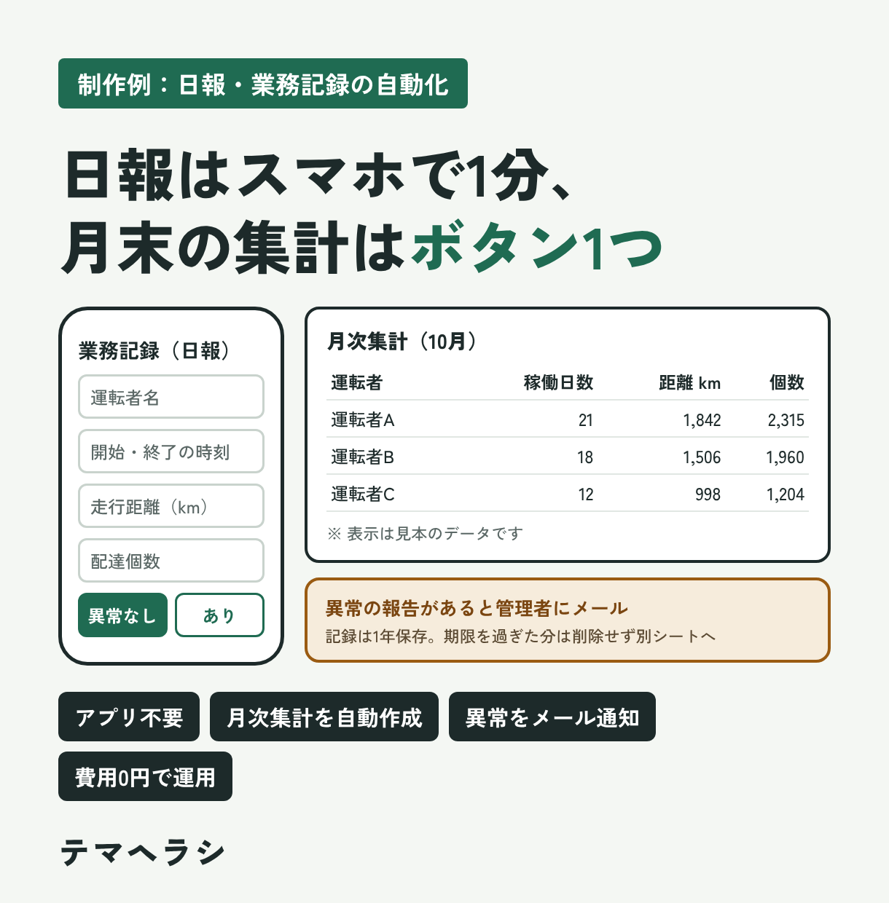

紙やLINEの報告を
Excelに打ち直している
入力はスマホのフォームに。届いた内容はそのまま表に入ります。
こんな作業、ありませんか
入力はスマホのフォームに。届いた内容はそのまま表に入ります。
人ごと・月ごとの集計は、ボタン1つか自動実行で作ります。
請求書や明細のPDFを、表のデータから自動で作ってメールで送ります。
未提出の人や「異常あり」の報告があれば、その場でメールが届きます。
いま
自動化のあと
人がやるのは「入力」と「確認」だけ。
体験デモ
制作例の仕組みを、ブラウザで動く形に縮めて再現しました。データはすべて見本です（入力した内容はどこにも送信されません）。
出退勤の登録
日付をまたぐ勤務（22:00→翌5:00など）もOK
| 氏名 | 日数 | 稼働 | 給与 |
|---|
左のフォームから送信すると、勤怠シートに記録され、この表が計算し直されます。
| 日付 | 運転者 | 距離km | 個数 | 異常 |
|---|
| 運転者 | 稼働日数 | 距離km | 個数 |
|---|---|---|---|
| 「月次集計を作る」を押してください | |||
📧 管理者へのメール
全角・半角、空白、中黒（・）がばらばらでも照合します。
「突き合わせる」を押してください
制作例
募集されていた業務や、身近な現場の困りごとをもとに自主制作したものです。お客さまの業務に合わせて作り変えてお渡しします。

勤怠管理・給与計算
GoogleフォームスプレッドシートGASPDF出力

日報・業務記録
GoogleフォームスプレッドシートGASメール通知
提出状況の確認
Drive APIスプレッドシートGAS定期実行
中身もお渡しします
作ったプログラム（GAS）はお客さまのGoogleアカウントの中で動きます。コードも、使い方の説明書もすべてお渡しするので、あとから別の人が手を入れることもできます。
できること
複数のシートやファイルから集めて、人ごと・月ごとに自動でまとめます。
日報、受付、予約、申請。スマホから入力した内容を自動で整理します。
出退勤の記録から給与の計算、明細の作成、シフト表づくりまで。
表のデータから書類を自動で作り、メールで送るところまで。
ChatGPTやClaudeで、問い合わせ返信の下書き、文章の要約や分類を自動化。
GASで作る、ログイン不要で社内だけで使える小さな業務アプリ。
進め方
今の作業の流れと、いちばん困っているところを教えてください。
何をどこまで自動化するか、費用と納期をお伝えします。
見本のデータで動作を確かめてから、使い方の説明書をつけて納品します。
実際に使ってみて気になったところは、納品後2週間まで無料で直します。
よくある質問
はい。普段はフォームへの入力と、スプレッドシートのメニューのボタンを押すだけで使えるように作ります。操作の説明書もお渡しします。
Googleのアカウントがあれば、追加のソフトや月額費用はかかりません。生成AIを組み込む場合のみ、AIの利用料が別にかかります（事前にお伝えします）。
お客さまご自身のGoogleアカウントの中に保存されます。こちらのサーバーにデータを預かることはありません。
制作の補助に生成AIを使っています。動作の確認と最終チェックは自分で行い、確認した内容をお伝えしたうえで納品します。
業務記録などで求められる項目を入れて作りますが、法令への対応を保証するものではありません。正式な記載項目は管轄の役所などの資料でご確認ください。
平日は夜、休日は日中に返信しています。24時間以内の返信を心がけています。
テマヘラシについて
物流の現場で管理の仕事をしながら、AIとGoogleのツールを使った業務の自動化に取り組んでいます。日報の打ち直しや月末の集計など、自分自身が「これは人がやらなくていい」と感じてきた作業を仕組みに変えるのが得意です。
大きなシステムを入れる前の、「いつものスプレッドシートのまま楽にしたい」というご相談を歓迎します。
ご相談・ご依頼
ご依頼は、ココナラから受け付けています。購入前のメッセージでのご相談も無料です。